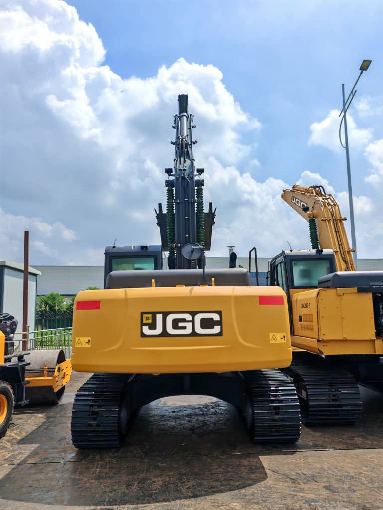
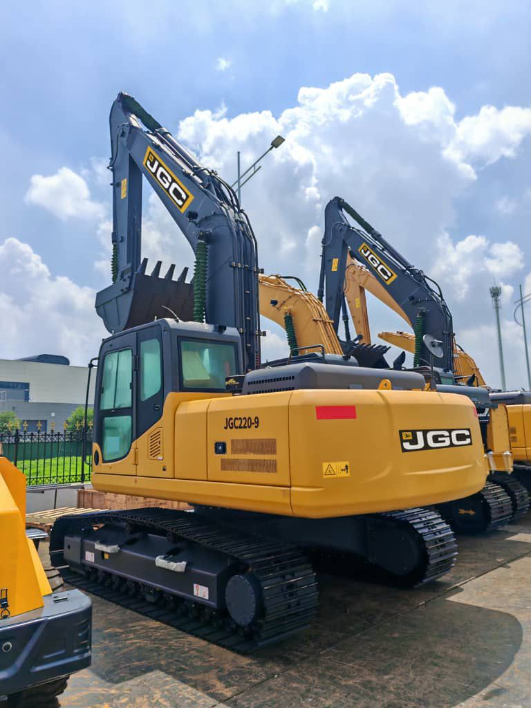
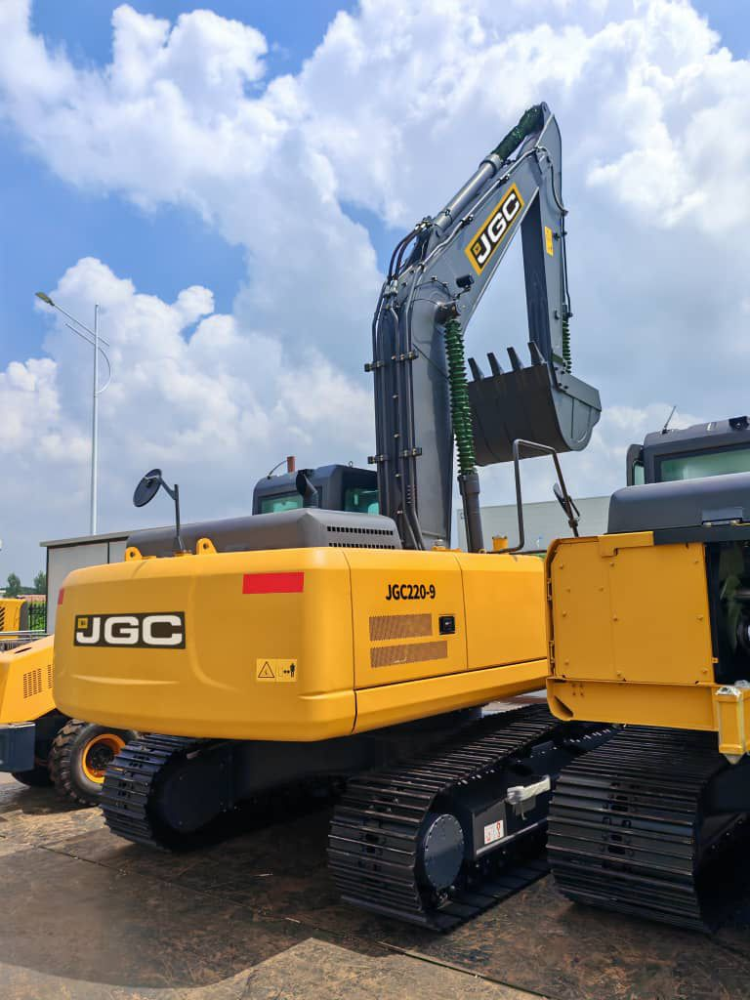

JGC220-9 Excavadora de 22 toneladas



| General | |
|---|---|
| Modelo Motor | Isuzu 6BG1 TRP |
| Combustible | Gasolina * |
| Aire Acondicionado | Sin Aire Acondicionado * |
| Tipo | Interenfriado |
| Número de cilindros | 6 |
| Regulación de emisiones | Tier 2 / Etapa II |
| Desplazamiento | 6.5 L |
| Potencia de salida | 128.5 kW / 2100 rpm |
| SISTEMA HIDRÁULICO | |
| Tipo | Control de flujo negativo |
| Máx. flujo de descarga | 2 × 228 L/min |
| FUERZA DE EXCAVACIÓN (ISO6015) | |
| - | - |
| CUCHARA | |
| Tipo | Cucharón retroexcavadora |
| Capacidad | 1.0 m³ |
| Ancho | 1.2 m |
| SISTEMA DE TRACCIÓN | |
| Tipo | Motor hidráulico |
| Cantidad de rodillos de soporte | 2 × 7 |
| Cantidad de rodillos portadores | 2 × 2 |
| Zapatas | 2 × 45 |
| Velocidades de desplazamiento | 5.2 / 3.5 km/h |
| Fuerza de tracción en barra | 196 kN |
| Capacidad de pendiente | 70% (35°) |
| SISTEMA DE GIRO | |
| Tipo de motor de giro | Motor de émbolo |
| Velocidad de giro | 11.5 rpm |
| Tipo de freno | Motor hidráulico |
| CAPACIDADES DE RECARGA Y LUBRICANTES | |
| Combustible | Gasolina * |
| Aceite motor | 28 L |
| Refrigerante | 20 L |
| Depósito de aceite hidráulico | 246 L |
| Capacidad sistema hidráulico total | 400 L |
| Tanque de combustible | 350 L |
| MOTOR / CHASIS | |
| Ancho de zapata | 600 / 800 mm |
| Presión sobre el suelo | 46.5 kPa |
| Peso operativo | 21,200 kg (21.2 t) |
| ÁMBITO DE TRABAJO (MM) | |
| Altura máx. de excavación | 9275 |
| Altura máx. de descarga | 6560 |
| Profundidad máx. de excavación | 6515 |
| Profundidad excavación vertical máx. | 5915 |
| Prof. máx. corte (fondo nivel 2500 mm) | 6320 |
| Distancia / radio máx. excavación | 9865 |
| Radio máx. excavación nivel suelo | 9680 |
| Mín. radio giro equipo de trabajo | 3630 |
| DIMENSIONES GENERALES (MM) | |
| Longitud total | 9380 |
| Ancho total | 2780 |
| Altura superior cabina | 3120 |
| Distancia suelo a contrapeso | 1065 |
| Distancia al suelo (mínima) | 466 |
| Radio de giro de la cola | 2720 |
| Longitud de la vía | 4460 |
| ACCESORIOS OPCIONALES | |
| Destripador, Acoplador, Trituradora hidráulica, Cizalla, Garra ("Lucha"), Cucharón de esqueleto, Concha, Cucharón inclinable. | |
Valores “—” o marcados con * pendientes de confirmación / corrección (p.ej. combustible real diésel y disponibilidad de A/C).
Solicitar Cotización